26/09/2026 — Bạn có hiểu hình mẫu này không? Điều gì sẽ xảy ra tiếp theo?
Bản dịch tiếng Việt của bài "Do you understand this pattern? What happens next?" – Dr. Smith’s ECG Blog. Giữ nguyên toàn bộ 15 hình ảnh của bản gốc.
Tác giả: Pendell Meyers.
Một người đàn ông ở độ tuổi 40 gọi đội cấp cứu ngoài viện (EMS) vì “đau lưng” cấp tính, khởi phát khi ông “đứng dậy.” Một đội hỗ trợ sự sống cơ bản (BLS) đến nơi, đo được các dấu hiệu sinh tồn bình thường và ghi điện tâm đồ này:

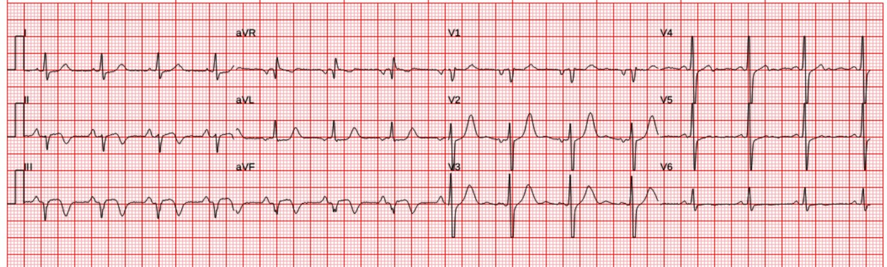
Bạn nghĩ gì?
Diễn giải: OMI dưới-sau đã tái tưới máu. ST chênh lên (STE) nhẹ còn tồn tại ở các chuyển đạo dưới, ST chênh xuống (STD) soi gương ở I, aVL. Sóng T đảo ngược do tái tưới máu ở các chuyển đạo dưới, và sóng T tái tưới máu thành sau ở V1-V3 (cao hơn các sóng T dương bình thường ở thành trước). Điều này có nghĩa là động mạch cấp máu cho thành dưới và thành sau gần đây đã bị tắc, nhưng trước thời điểm ghi điện tâm đồ này, chỗ tắc đã mở ra một phần (hoặc tuần hoàn bàng hệ đã được thiết lập). Vào lúc này, nếu chụp mạch vành, sẽ có một phần dòng chảy vào vùng nhồi máu, làm biến mất hình ảnh OMI ĐANG DIỄN RA (trong lúc tắc), và khởi đầu hình ảnh TÁI TƯỚI MÁU.
Khi một động mạch đã tái tưới máu tạm thời, nó có thể tắc lại bất cứ lúc nào. Về lý thuyết, nguy cơ tắc lại có thể được giảm thiểu nhờ điều trị nội khoa tối ưu, nhưng không thể bảo đảm ngăn ngừa được tình trạng tắc lại.

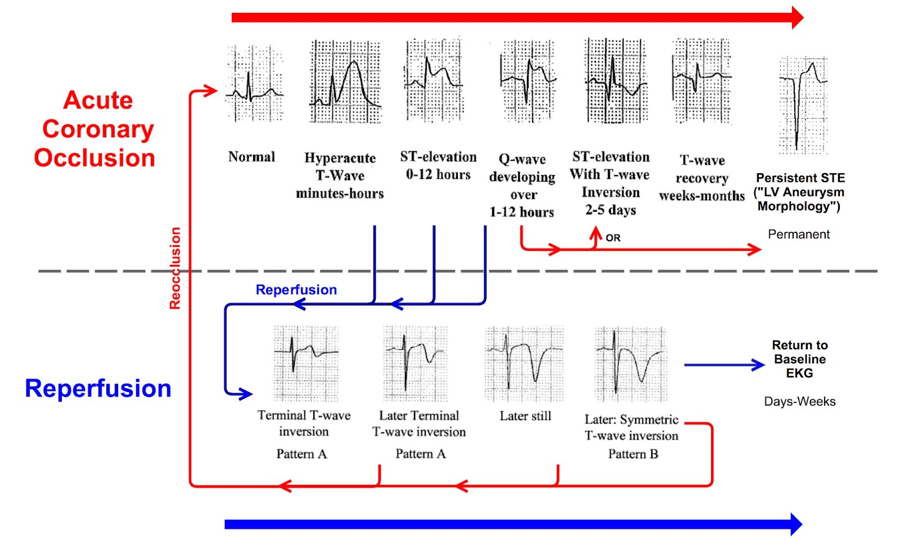

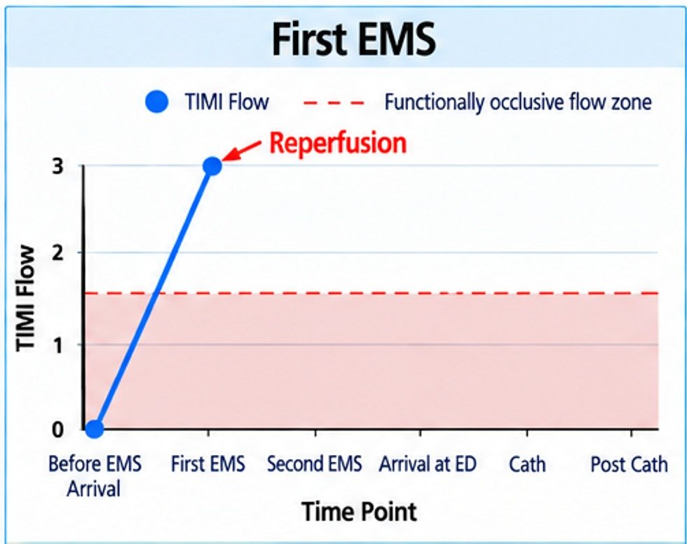
Nếu đội EMS có sẵn PMcardio Queen of Hearts, đây là những gì họ sẽ thấy:

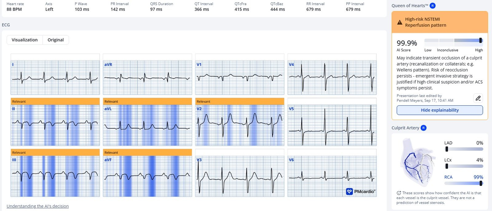
Queen đọc hoàn toàn chính xác, với độ tin cậy cao. Bản đồ nhiệt giải thích (explainability heat map) ở đây là hoàn hảo. RCA được dự đoán là động mạch thủ phạm.
Đáng tiếc là đội EMS không có thông tin này, và họ báo lại rằng thuật toán máy tính trong máy theo dõi tim của EMS KHÔNG đọc ra “STEMI” hay “nhồi máu cơ tim cấp”, và vì bệnh nhân đau “lưng” chứ không phải đau “ngực”, và cơn đau đã giảm hoặc hết, nên họ đã không gửi điện tâm đồ cho bác sĩ đọc.
Vì một lý do nào đó, bệnh nhân từ chối được chuyển đến bệnh viện. Tôi cho rằng nhiều khả năng cuộc trao đổi đã bị ảnh hưởng tiêu cực do không hiểu được điện tâm đồ này có giá trị chẩn đoán đến mức nào. (đội EMS hẳn đã giải thích rằng bệnh nhân có nguy cơ rất cao gặp biến cố bất lợi, nếu tình huống được hiểu đúng). May mắn là họ đã dặn dò kỹ rằng phải gọi lại nếu cơn đau tái phát.
Khoảng 90 phút sau, bệnh nhân lại gọi EMS vì đau tái phát.
Đây là điện tâm đồ ghi lại của ông:

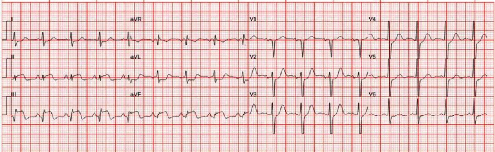
Trong khoảng thời gian đó, động mạch đã tắc lại.

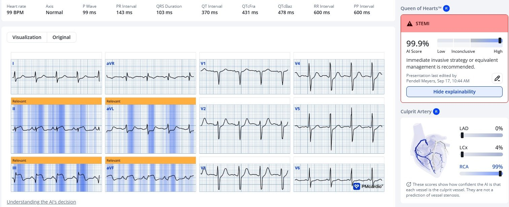

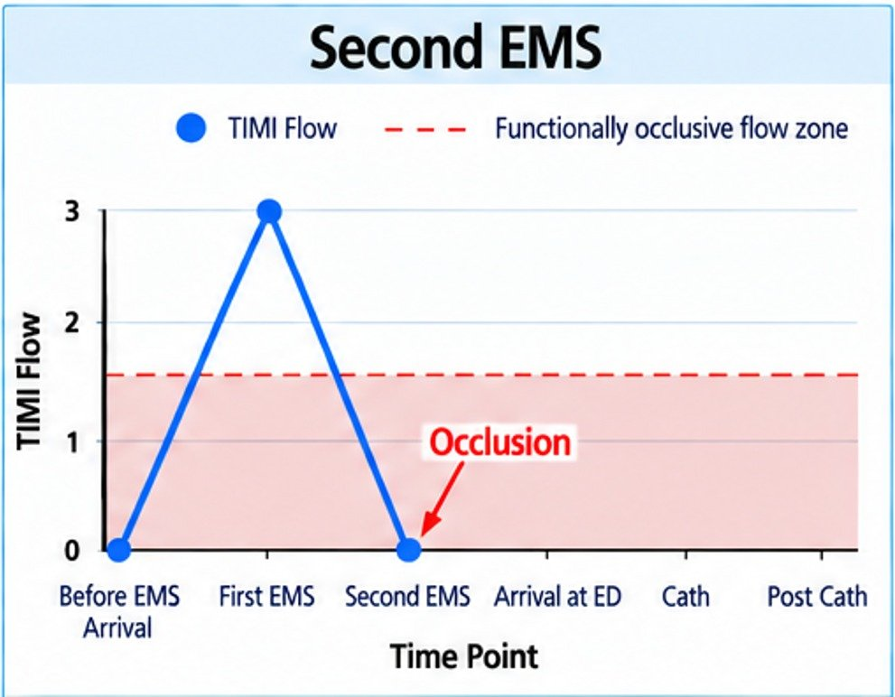
Cơn đau vẫn còn khi đến khoa cấp cứu (ED):

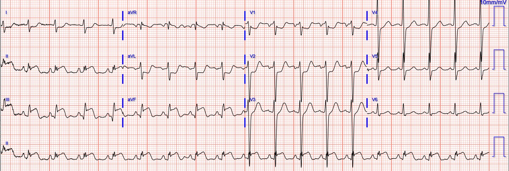

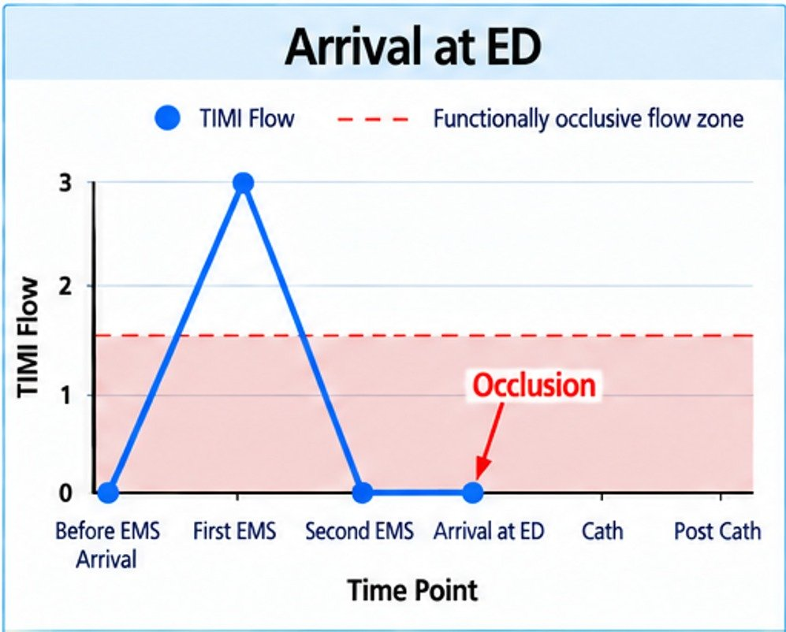
Phòng thông tim (cath lab) được kích hoạt, điều trị nội khoa tối đa được bắt đầu trong lúc chờ phòng thông tim, và các triệu chứng lại hết vào lúc ông đến phòng thông tim.
Tại thời điểm chụp mạch vành cấp tốc, tổn thương RCA được đánh giá có dòng chảy TIMI 3, hẹp 99%:

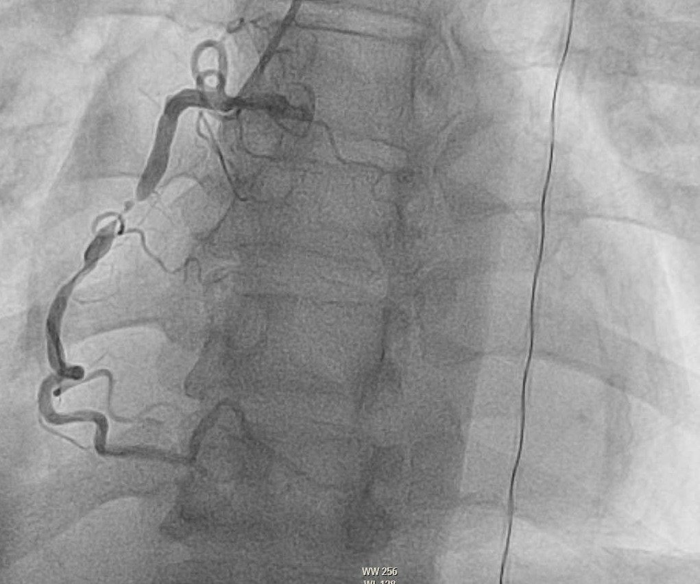
Sau PCI:

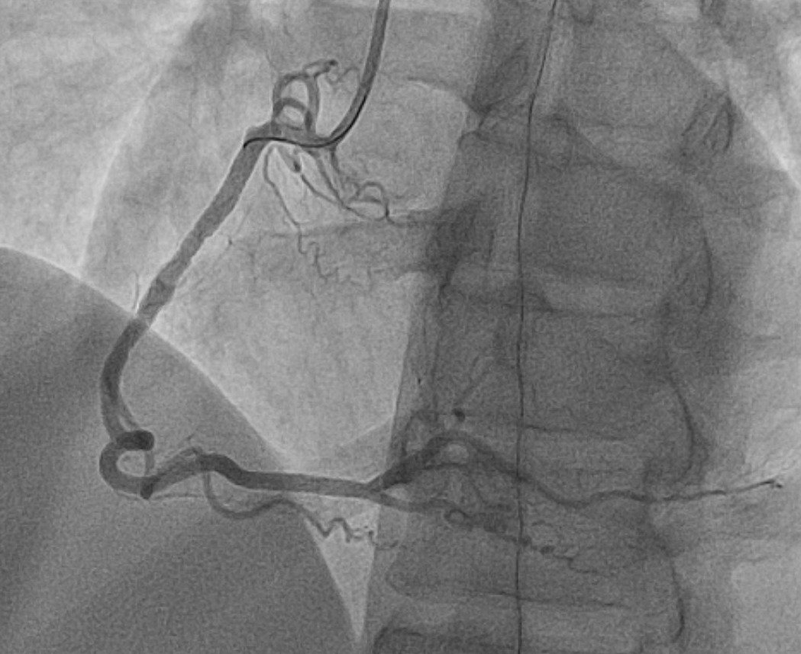

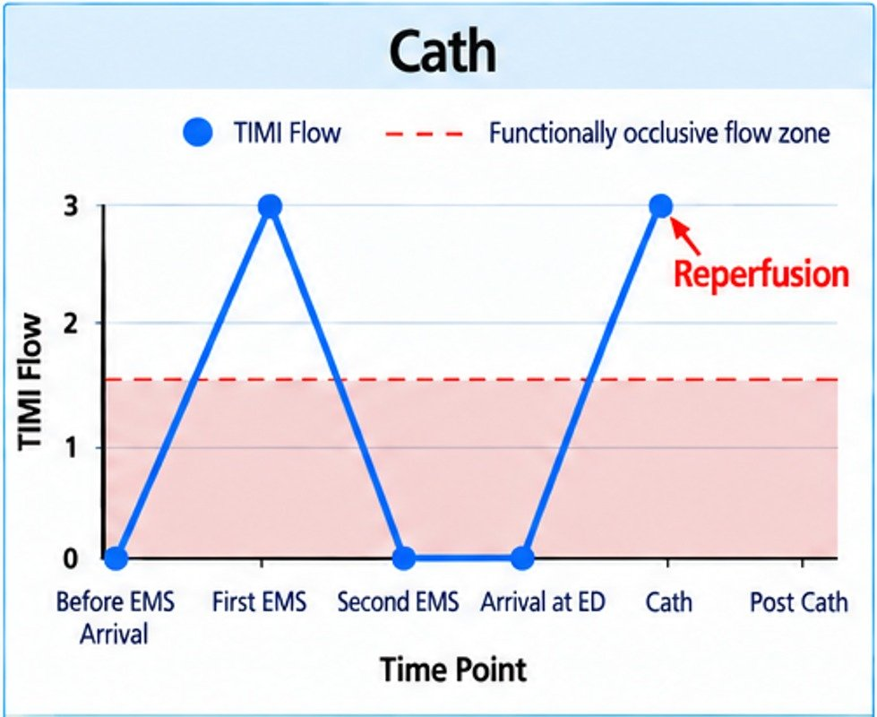
Điện tâm đồ sau thông tim trở lại hình ảnh tái tưới máu:

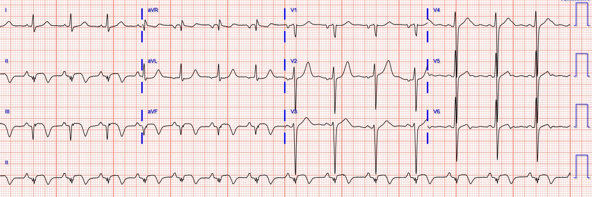

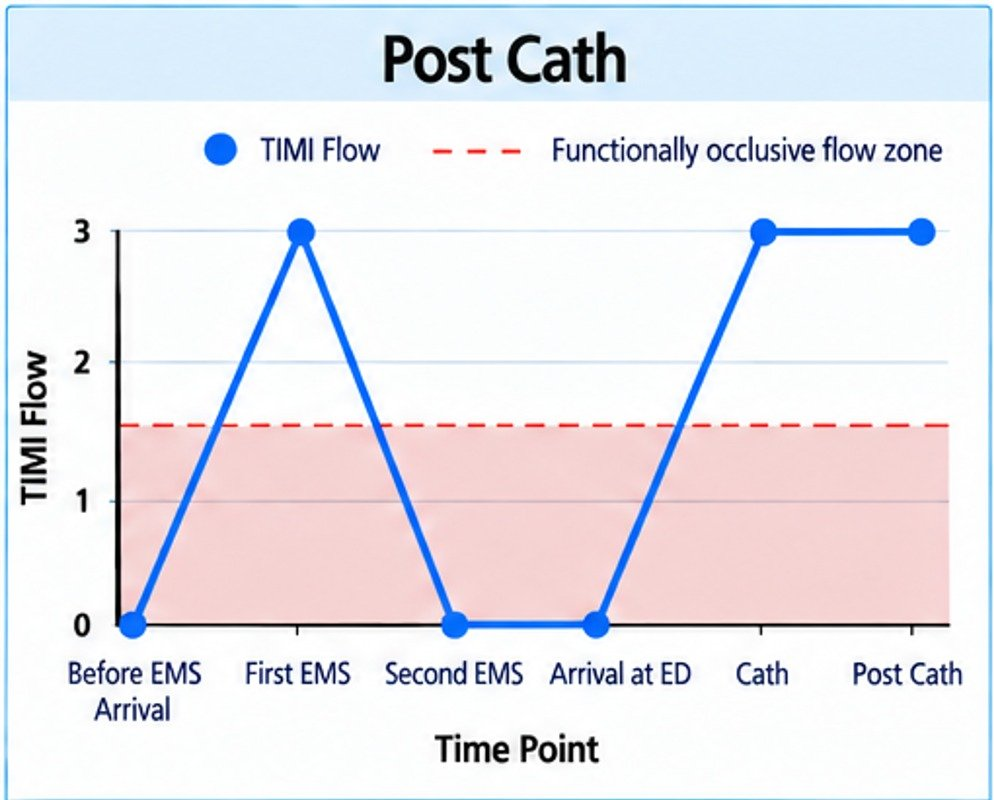
Troponin (troponin I độ nhạy cao, giới hạn trên tham chiếu (URL) <20ng/L):
2,552
>25,000
>25,000
(không đo thêm)
Những điểm CHÍNH:
Hình ảnh tái tưới máu xảy ra ở mọi vùng phân bố, và báo hiệu nguy cơ cao tắc lại nếu không điều trị tích cực, ngay lập tức.
Bạn phải hiểu ACS biến động như thế nào. Để hiểu rõ bệnh lý này, bạn phải hiểu vai trò của điện tâm đồ và của hình ảnh tái tưới máu. Bạn phải hiểu rằng dòng chảy TIMI của tổn thương thay đổi liên tục trong quá trình bệnh, và do đó dòng chảy TIMI tại thời điểm chụp mạch vành không cho bạn biết dòng chảy TIMI ở bất kỳ thời điểm nào khác trong diễn tiến bệnh của bệnh nhân.
Cuối cùng, hẹp “99%” không cho bạn biết gì về dòng chảy; trong ca này có một chỗ hẹp 99% RẤT khít nhưng dòng chảy tốt. Chính dòng chảy, đặc biệt là dòng chảy vi mạch, mới quyết định thiếu máu cục bộ. Bản thân mức độ hẹp KHÔNG nói lên điều gì về thiếu máu cục bộ.
(Ngoại lệ: khi nhu cầu cao, chẳng hạn trong nghiệm pháp gắng sức, chỗ hẹp có thể ngăn cản việc tạo ra dòng chảy siêu bình thường, vốn cần thiết trong tình trạng nhu cầu cao!)
Ngay cả khi bạn đáp ứng tức thì với tình trạng tắc lại, hậu quả vẫn có thể rất nặng nề. Việc quyết định thay đổi xử trí hoặc hạ mức ưu tiên của bệnh nhân dựa trên sự cải thiện tạm thời mang lại nhiều rủi ro mà lợi ích chẳng bao nhiêu.
Trừ khi bạn đã giỏi ngang mô hình AI đọc điện tâm đồ của chúng tôi, hãy cân nhắc sử dụng nó.
= = =
==================================
BÌNH LUẬN CỦA TÔI, bởi KEN GRAUER, MD (26/9/2026):
Tôi thấy ca hôm nay đáng chú ý vì nó minh họa triệu chứng của bệnh nhân có thể tương quan chặt chẽ đến mức nào với tình trạng của động mạch “thủ phạm” ở một bệnh nhân có OMI đang tiến triển.
- Mặc dù một số chi tiết về thời điểm chính xác của các diễn biến trong ca hôm nay được ghi nhận chưa thật đầy đủ — điện tâm đồ ban đầu do EMS ghi tại giường (trình bày bên dưới ở Hình 1) — quả thật tương quan với cơn đau “lưng” của bệnh nhân, vốn dường như đã giảm hoặc hết vào lúc ghi bản ghi thứ 1 này.
- Như Dr. Meyers đã nêu — hình ảnh tổng thể trên điện tâm đồ #1 gợi ý OMI dưới-sau mới xảy ra, nay với các mũi tên ĐỎ làm nổi bật một loạt sóng T tái tưới máu (= sóng T đảo ngược sâu ở các chuyển đạo dưới — và sóng T dương cao ở các chuyển đạo V2,V3).
- ST dạng vòm (coving) với ST còn chênh lên vẫn thấy ở các chuyển đạo II,III,aVF.
- Sóng Q (phức bộ QS) sâu thấy ở mỗi chuyển đạo dưới này — gợi ý một nhồi máu đã hình thành, có lẽ đã bắt đầu từ nhiều giờ (nếu không muốn nói là lâu hơn) trước đó.
- ST dẹt nổi bật ở chuyển đạo aVL — nhưng việc không có ST chênh xuống ở chuyển đạo này ủng hộ giả thuyết rằng biến cố cấp nhiều khả năng đã bắt đầu sớm hơn khá nhiều.
Như Dr. Meyers đã nêu — các triệu chứng khiến bệnh nhân gọi EMS có lẽ đã giảm hoặc hết trong lúc đội EMS chăm sóc ông, đến mức cuối cùng bệnh nhân từ chối được chuyển đến bệnh viện. Sau khi đội EMS rời đi — cơn đau của bệnh nhân quay trở lại — nên ông lại gọi EMS một lần nữa.
- Điện tâm đồ ghi lại do EMS ghi khi họ quay lại nhà bệnh nhân rất có ý nghĩa:
- Điện tâm đồ #2 (ghi ~90 phút sau điện tâm đồ #1) — nay làm nổi bật những thay đổi rõ rệt của tình trạng tắc lại cấp động mạch “thủ phạm”. Những thay đổi điện tâm đồ này tương quan chặt chẽ với sự trở lại của cơn đau ( = nay thấy sóng ST-T tối cấp với ST chênh lên ở các chuyển đạo dưới, đi kèm ST chênh xuống soi gương ở chuyển đạo aVL).
- Nhận xét #1: Thay đổi sóng ST-T trên điện tâm đồ #2 ở các chuyển đạo ngực kín đáo hơn so với các chuyển đạo chi. So sánh kỹ giữa 2 bản ghi đầu tiên của ca hôm nay quả thật cho thấy điểm J chênh xuống tăng thêm phần nào ở các chuyển đạo từ V2 đến V5 của điện tâm đồ #2 (phù hợp với OMI thành sau đang diễn ra). Dù vậy — lý do tôi thấy điện tâm đồ ghi lại này của EMS đáng chú ý là vì nó làm nổi bật sự khác biệt về mức độ thay đổi do thiếu máu cục bộ có thể thấy giữa các vùng khác nhau của tim (lý do của sự khác biệt này sẽ trở nên rõ ràng hơn ở Nhận xét #3 bên dưới).
= = =
Hình 1: Tôi trình bày lại 4 điện tâm đồ của ca hôm nay. (Để nhìn rõ hơn — tôi đã số hóa điện tâm đồ gốc bằng PMcardio).

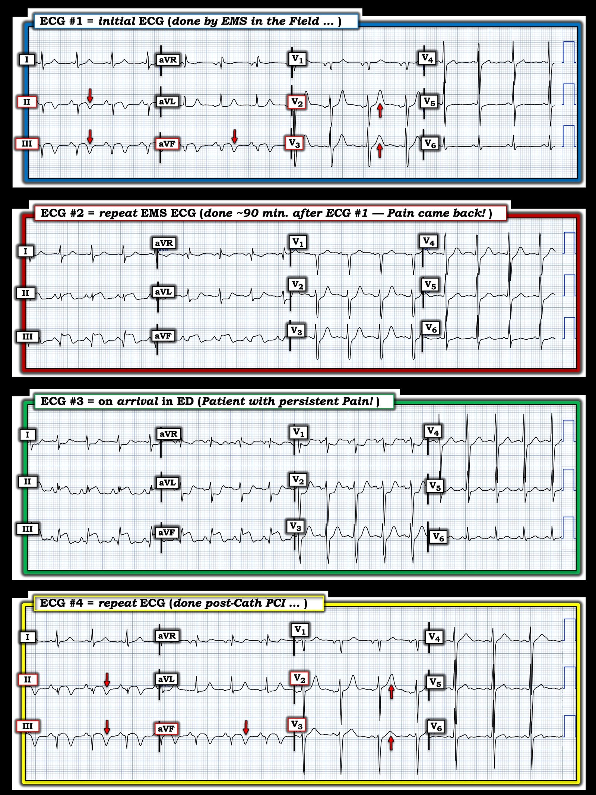
= = =
Cơn đau của bệnh nhân vẫn kéo dài …
So sánh giữa điện tâm đồ #2 và điện tâm đồ #3 cho phép chúng ta thấy tác động của tình trạng tắc động mạch vành kéo dài — khi cơn đau của bệnh nhân này vẫn tiếp diễn sau khi đến khoa cấp cứu:
- Lưu ý mức ST chênh lên ở các chuyển đạo dưới tăng thêm nữa trên điện tâm đồ #3. Góc của “đoạn khởi đầu” ST ở các chuyển đạo II,III,aVF cũng tăng nhẹ — gợi ý mức độ “tối cấp” lớn hơn.
- Nhận xét #2: Mặc dù mức ST chênh lên ở các chuyển đạo dưới tăng lên trên điện tâm đồ #3 — các phức bộ QS thấy lúc đầu trên điện tâm đồ #1 (được ghi trong giai đoạn được cho là tái tưới máu tự phát) — nay các phức bộ QS này đã thoái lui một cách bất ngờ, chỉ còn là các sóng q nhồi máu tương đối nhỏ mà ta thấy ở các chuyển đạo III và aVF ( ==> thế là hết cái giáo điều trước đây cho rằng sóng Q là biểu hiện “vĩnh viễn” của cơ tim đã chết).
- Trong khi đó, mức ST chênh xuống soi gương tăng lên ở các chuyển đạo bên cao I và aVL nay tương xứng tốt hơn nhiều với mức tăng rõ rệt của ST chênh lên ở các chuyển đạo dưới.
- Nhận xét #3: Mức ST chênh xuống ở chuyển đạo V2 đã tăng đáng kể trên điện tâm đồ #3 so với điện tâm đồ #2. Ngoài ra — nay có ST chênh xuống rõ ở chuyển đạo V1 (điều không có trên điện tâm đồ #2).
- ĐIỂM THEN CHỐT (PEARL): ST chênh lên ở các chuyển đạo bên phải (bao gồm chuyển đạo V1) — thường là hiện tượng thoáng qua khi có tổn thương thất phải (RV) cấp . Điều này gợi ý rằng việc không có ST chênh xuống ở chuyển đạo V1 mà ta thấy trên điện tâm đồ #2, đi kèm với những thay đổi rõ ở các chuyển đạo chi trên bản ghi đó — là hậu quả của nhồi máu thất phải (RV MI) cấp (trong đó mức ST chênh lên lẽ ra ta sẽ thấy ở chuyển đạo V1 nếu chỉ có RV MI đơn thuần đã bị giảm bớt bởi ST chênh xuống ở các chuyển đạo trước do đồng thời xảy ra OMI thành sau).
- Tôi ngờ rằng điện tâm đồ #3 phản ánh sự hồi phục phần nào của ST chênh lên thoáng qua ở chuyển đạo V1 do RV MI — nay cho thấy bức tranh điện tâm đồ chủ yếu là OMI dưới-sau cấp.
- Về mặt lâm sàng — những thay đổi tiến triển này trên điện tâm đồ #2 và #3 gợi ý mạnh rằng RCA đoạn gần (chứ không phải LCx) là động mạch “thủ phạm”.
- LƯU Ý: Nếu ghi các chuyển đạo bên phải vào thời điểm ghi điện tâm đồ #2 thì nhiều khả năng đã xác nhận được RV MI cấp (Để biết thêm về “Như thế nào” và “Tại sao” của các chuyển đạo bên phải — hãy xem Bình luận của tôi ở cuối trang trong bài ngày 19 tháng Bảy năm 2020 trên Dr. Smith’s ECG Blog).
= = =
Hình mẫu lặp lại …
Phòng thông tim đã được kích hoạt.
- Một lần nữa, có sự tương quan chặt chẽ giữa triệu chứng của bệnh nhân và tình trạng của RCA “thủ phạm”:
- Cơn đau của bệnh nhân đã hết trong lúc chờ kích hoạt phòng thông tim. Việc hết đau này tương quan với kết quả thông tim cho thấy dòng chảy TIMI-3 ( = “bình thường” ) mặc dù RCA hẹp 99% ==> hẳn là một lần nữa đã có ít nhất một phần tái tưới máu tự phát của động mạch “thủ phạm” ngay trước khi tiến hành PCI.
- Kết quả thông tim với dòng chảy TIMI-3 mặc dù RCA đoạn gần hẹp 99% này tương quan với các dấu hiệu trên điện tâm đồ #4 — một lần nữa cho thấy các sóng T tái tưới máu tương tự ở các chuyển đạo dưới và ở chuyển đạo V2 như ta đã thấy trên điện tâm đồ ban đầu của ca hôm nay. Ngoài ra — ST chênh xuống soi gương ở các chuyển đạo bên cao và ST chênh xuống ở chuyển đạo V1 thấy trên điện tâm đồ #3 — đều đã gần như hồi phục hoàn toàn.
= = =
Suy ngẫm tổng kết về CA BỆNH hôm nay:
- Các thay đổi trên những điện tâm đồ liên tiếp ở Hình 1 minh họa rất rõ mối tương quan lâm sàng giữa cơn đau lúc tăng lúc giảm của bệnh nhân này và tình trạng của RCA “thủ phạm” trong diễn tiến ngắt quãng (stuttering) của OMI cấp ở bệnh nhân.
- Mối tương quan này đã được xác nhận bởi phát hiện bất ngờ khi thông tim là vẫn có ít nhất một phần dòng chảy mặc dù RCA đoạn gần hẹp 99% (PCI vẫn hết sức cần thiết vì chỗ hẹp rất khít).
- Thật thỏa mãn phải không khi chúng ta có thể ghép lại một câu chuyện lâm sàng giải thích được từng bước trong chuỗi thay đổi điện tâm đồ rõ rệt lần lượt thấy ở Hình 1?
- T.B. (P.S.): Cần lưu ý rằng trong diễn tiến ngắt quãng, lúc tăng lúc giảm có thể gặp trong quá trình tiến triển của OMI cấp (tức là, khi có các chu kỳ tái tưới máu tự phát xen kẽ với tắc lại) — thay đổi điện tâm đồ rõ rệt đôi khi có thể xảy ra rất nhanh!
= = =
= = =